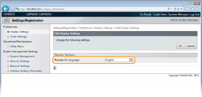

Setting Menu List
This section describes the menu items that can be set using the Remote UI. Default settings are marked with a dagger ( ).
).
).|
[Preferences] Menu
[Adjustment/Maintenance] Menu
[System Management Settings] Menu
|
Display Settings
Select the display language used for the Remote UI screens.
|
Remote UI Language
Chinese (Simplified)
English
French
German
Italian
Japanese
Spanish
|
Log on to the Remote UI (Starting the Remote UI)  [Settings/Registration] [Display Settings] [Edit] Select the display language [OK]
[Settings/Registration] [Display Settings] [Edit] Select the display language [OK]

[Remote UI Language]
Selects the display language used for the Remote UI screens.
Selects the display language used for the Remote UI screens.
Timer Settings
Make settings related to time, such as the time zone.
|
Time Zone
UTC-12:00 to UTC-5:00
to UTC+12:00Use Daylight Saving Time
Off
On
Start
January to March
to December1st to 2nd
to LastMonday to Sunday
End
January to November
to December1st
to LastMonday to Sunday
Auto Sleep Time
Off
After 1 minute
After 5 minutes
After 10 minutes
After 15 minutes
After 30 minutes
After 60 minutes
Auto Shutdown Time
Off
After 1 hour
After 2 hours
After 3 hours
After 4 hours
After 5 hours
After 6 hours
After 7 hours
After 8 hours
|
Log on to the Remote UI (Starting the Remote UI) [Settings/Registration] [Timer Settings] [Edit] Item settings [OK]

[Time Zone]
Set the time zone of the region where the machine will be used.

UTC
Coordinated Universal Time (UTC) is the primary time standard by which the world regulates clocks and time. The correct UTC time zone setting is required for Internet communications.
Set the time zone of the region where the machine will be used.
UTC
Coordinated Universal Time (UTC) is the primary time standard by which the world regulates clocks and time. The correct UTC time zone setting is required for Internet communications.
[Use Daylight Saving Time]
Enable or disable daylight saving time. If daylight saving time is enabled, specify the dates from which and to which daylight saving time is in effect.
Enable or disable daylight saving time. If daylight saving time is enabled, specify the dates from which and to which daylight saving time is in effect.
[Auto Sleep Time]
The machine enters sleep mode automatically when it remains idle for a certain length of time. Specify the length of time until the machine enters auto sleep. We recommend using the factory default settings to save the most power. Setting Sleep Mode
The machine enters sleep mode automatically when it remains idle for a certain length of time. Specify the length of time until the machine enters auto sleep. We recommend using the factory default settings to save the most power. Setting Sleep Mode
[Auto Shutdown Time]
You can set up the machine to automatically turn itself OFF after it remains idle for a certain length of time. This prevents wasted power consumption caused by forgetting to turn the machine OFF. Specify the length of time until the machine turns itself OFF. Setting Auto Shutdown
You can set up the machine to automatically turn itself OFF after it remains idle for a certain length of time. This prevents wasted power consumption caused by forgetting to turn the machine OFF. Specify the length of time until the machine turns itself OFF. Setting Auto Shutdown
Utility Menu
You can clean the fixing unit inside the machine.
Cleaning
Clean the fixing unit if black spots or streaks appear on printouts. Note that you cannot clean the fixing unit when the machine has documents waiting to be printed. To clean the fixing unit, you need plain Letter size paper. Before starting, load Letter size paper in the multi-purpose tray or manual feed slot (Loading Paper in the Multi-Purpose Tray Loading Paper in the Manual Feed Slot).
Log on to the Remote UI (Starting the Remote UI) [Settings/Registration] [Utility Menu] [Cleaning] [Execute] [OK]

 |
The paper is fed slowly into the machine, and cleaning starts. The cleaning is done when the paper is completely ejected.
Cleaning cannot be cancelled once it starts. Wait until it finishes (approx. 90 seconds).
|
System Management
You can specify that a PIN (system manager password) is required when logging in to the Remote UI in System Manager Mode, and you can register information about the system manager, such as name and contact information. You can also register a name to identify this machine, and register its location.
|
System Manager Information
System Manager PIN
System Manager Name
Contact Information
E-Mail Address
System Manager Comment
Device Information
Device Name
Location
Support Link
|
Log on to the Remote UI in System Manager Mode (Starting the Remote UI) [Settings/Registration] [System Management] [Edit] Item settings [OK]

 [System Manager Information]
[System Manager Information]
Specify the PIN and other system manager information. Setting System Manager Passwords
 [Device Information]
[Device Information]
[Device Name]
Enter up to 32 alphanumeric characters for the name of the machine.
Enter up to 32 alphanumeric characters for the name of the machine.
[Location]
Enter up to 32 alphanumeric characters for the location of the machine.
Enter up to 32 alphanumeric characters for the location of the machine.
[Support Link]
Enter a link to support information about the machine. The link can be up to 128 alphanumeric characters long. The link is displayed on the Portal Page (main page) of the Remote UI.
Enter a link to support information about the machine. The link can be up to 128 alphanumeric characters long. The link is displayed on the Portal Page (main page) of the Remote UI.
Security Settings
Enable or disable encrypted communication via SSL and IP address packet filtering.
Remote UI Settings
Select whether to use SSL encrypted communication. Enabling SSL Encrypted Communication for the Remote UI
|
Use SSL
Off
On
|
Key and Certificate Settings
Register key pairs, or generate them on the machine. You can check and verify registered key pairs. Configuring Settings for Key Pairs and Digital Certificates
CA Certificate Settings
Register a CA certificate. One CA certificate is preinstalled. You can check and verify registered CA certificates. Configuring Settings for Key Pairs and Digital Certificates
IP Address Filter
Specify whether to allow or reject packets sent to or received from devices with specified IP addresses.
IPv4 Address: Outbound Filter
Do not allow the machine to send data to a computer with a specified IPv4 address. Specifying IP Addresses for Firewall Rules
|
Use Filter
Off
On
Default Policy
Reject
Allow
|
IPv4 Address: Inbound Filter
Reject data received by the machine from a computer with a specified IPv4 address. Specifying IP Addresses for Firewall Rules
|
Use Filter
Off
On
Default Policy
Reject
Allow
|
IPv6 Address: Outbound Filter
Do not allow the machine to send data to a computer with a specified IPv6 address. Specifying IP Addresses for Firewall Rules
|
Use Filter
Off
On
Default Policy
Reject
Allow
|
IPv6 Address: Inbound Filter
Reject data received by the machine from a computer with a specified IPv4 address. Specifying IP Addresses for Firewall Rules
|
Use Filter
Off
On
Default Policy
Reject
Allow
|
MAC Address Filter
Specify whether to allow or reject packets sent to or received from devices with specified MAC addresses.
Outbound Filter
Do not allow the machine to send data to a computer with a specified MAC address. Specifying MAC Addresses for Firewall Rules
|
Use Filter
Off
On
Default Policy
Reject
Allow
|
Inbound Filter
Reject data received by the machine from a computer with a specified MAC address. Specifying MAC Addresses for Firewall Rules
|
Use Filter
Off
On
Default Policy
Reject
Allow
|
Network Settings
Make settings related to network functions.
TCP/IP Settings
Specify settings for using the machine in a TCP/IP network, such as IP address settings.
IPv4 Settings
Specify settings for using the machine in an IPv4 network. Setting IPv4 Address Configuring DNS
|
IP Address Settings
Auto Acquire
Select Protocol
Off
DHCP
BOOTP
RARP
Auto IP
On
Off
IP Address
Subnet Mask
Gateway Address
DNS Settings
Primary DNS Server Address
Secondary DNS Server Address
Host Name
Domain Name
DNS Dynamic Update
Off
On
DNS Dynamic Update Interval: 0 to 24
to 48 (hours) mDNS Settings
Use mDNS
Off
On
mDNS Name
DHCP Option Settings
Acquire Host Name
Off
On
DNS Dynamic Update
Off
On
|
IPv6 Settings
Specify settings for using the machine in an IPv6 network. Setting IPv6 Addresses Configuring DNS
|
IP Address Settings
Use IPv6
Off
On
Stateless Address
Off
On
Use Manual Address
Off
On
IP Address
Prefix Length: 0 to 64
to 128Default Router Address
Use DHCPv6
Off
On
DNS Settings
Primary DNS Server Address
Secondary DNS Server Address
Use Same Host Name/Domain Name as IPv4
Off
On
Host Name
Domain Name
DNS Dynamic Update
Off
On
Register Manual Address
Register Stateful Address
Register Stateless Address
DNS Dynamic Update Interval: 0 to 24
to 48 (hours) mDNS Settings
Use mDNS
Off
On
Use Same mDNS Name as IPv4
Off
On
mDNS Name
|
WINS Settings
Specify settings for Windows Internet Name Service (WINS), which provides a NetBIOS name for IP address resolutions in a mixed network environment of NetBIOS and TCP/IP. Configuring WINS
|
WINS Resolution
Off
On
WINS Server Address
Scope ID
|
LPD Print Settings
Enable or disable LPD, a printing protocol that can be used on any hardware platform or operating system. Configuring Printing Protocols and Web Services
|
Use LPD Printing
Off
On
|
NetBIOS Settings
Set a NetBIOS name and a workgroup name, which must be set to register this machine with a WINS server. Configuring NetBIOS
|
NetBIOS Name
Workgroup Name
|
RAW Print Settings
Enable or disable RAW, a Windows specific printing protocol. Configuring Printing Protocols and Web Services
|
Use RAW Printing
Off
On
|
WSD Settings
Enable or disable automatic browsing and acquiring information for the machine by using the WSD protocol that is available on Windows Vista/7/8/Server 2008/Server 2012. Configuring Printing Protocols and Web Services
|
Use WSD Printing
Off
On Use WSD Browsing
Off
On
Use Multicast Discovery
Off
On
|
SSL Settings
Specify the key pair to use when conducting SSL encrypted communication with the Remote UI. Enabling SSL Encrypted Communication for the Remote UI
Multicast Discovery Settings
Specify whether the machine should respond to discovery packets when multicast discovery is performed on the network using Service Location Protocol (SLP). Configuring SLP Communication with imageWARE
|
Respond to Discovery
Off
On
Scope Name
|
Port Number Settings
Change port numbers for protocols according to your network environment. Changing Port Numbers
|
LPD
1 to 515
to 65535RAW
1 to 9100
to 65535HTTP
1 to 80
to 65535SNMP
1 to 161
to 65535WSD Multicast Discovery
1 to 3702
to 65535Multicast Discovery
1 to 427
to 65535 |
MTU Size Settings
Select the maximum size of packets the machine sends or receives. Changing the Maximum Transmission Unit
|
MTU Size
1300
1400
1500
|
SNTP Settings
Specify whether to acquire the time from a time server on the network. Configuring SNTP
|
Use SNTP
Off
On
NTP Server Name
Polling Interval: 1 to 24
to 48 (hours) |
SNMP Settings
Specify the settings for monitoring and controlling the machine from a computer running SNMP-compatible software. Monitoring and Controlling the Machine with SNMP
|
SNMPv1 Settings
Use SNMPv1
Off
On
Community Name 1
MIB Access Permission 1
Community Name 2
MIB Access Permission 2
Dedicated Community Settings
Off
Read/Write
Read Only
SNMPv3 Settings
Use SNMPv3
Off
On
User Settings 1/User Settings 2/User Settings 3
Context Settings
Printer Management Information Acquisition Settings
Acquire Printer Management Information from Host
Off
On
|
Dedicated Port Settings
Enable or disable the dedicated port. The dedicated port is used when using the Printer Status Window to make machine settings and acquire information about the machine.
|
Use Dedicated Port
Off
On
|
Log on to the Remote UI in System Manager Mode (Starting the Remote UI) [Settings/Registration] [Network Settings] [Dedicated Port Settings] [Edit] Select whether to use [OK] Restart the machine

[Use Dedicated Port]
Select the check box to use the dedicated port. Clear the check box if you do not want to use it.

If you clear the check box, the Printer Status Window cannot acquire machine information.
Select the check box to use the dedicated port. Clear the check box if you do not want to use it.
If you clear the check box, the Printer Status Window cannot acquire machine information.
Waiting Time for Connection at Startup
Specify a wait time for connecting to a network. Select the setting depending on your network environment. Setting a Wait Time for Connecting to a Network
|
Waiting Time
0
to 300 (seconds) |
Ethernet Driver Settings
You can specify the Ethernet communication mode (Half Duplex/Full Duplex) and Ethernet type (10BASE-T/100BASE-TX), and display the MAC address. Configuring Ethernet Settings
|
Auto Detect
Off
On
Communication Mode
Half Duplex
Full Duplex
Ethernet Type
10BASE-T
100BASE-TX
MAC Address (Display only)
|
Wireless LAN Settings
You can check wireless LAN settings and status information. Wireless LAN settings cannot be changed from the Remote UI. Make wireless LAN settings from the computer using the MF/LBP Network Setup Tool. (Connecting to a Wireless LAN)
Log on to the Remote UI in System Manager Mode (Starting the Remote UI) [Settings/Registration] [Network Settings] [Wireless LAN Settings] Check settings and information

[MAC Address]
Displays the MAC address of the wireless LAN.
Displays the MAC address of the wireless LAN.
[Wireless LAN Status]
Displays the connection status (signal strength) of the wireless LAN.
Displays the connection status (signal strength) of the wireless LAN.
[Latest Error Information]
Displays information about the latest failure to make a wireless LAN connection.
Displays information about the latest failure to make a wireless LAN connection.
[Channel]
Displays the wireless LAN channel that is currently in use.
Displays the wireless LAN channel that is currently in use.
[SSID Settings]
Displays the SSID of the connected wireless LAN router.
Displays the SSID of the connected wireless LAN router.
[Security Settings]
Displays the type of encryption that is currently being applied.
Displays the type of encryption that is currently being applied.
[WPA/WPA2-PSK Settings]/[WEP Settings]
Displays the current WPA/WPA2-PSK and WEP settings.
Displays the current WPA/WPA2-PSK and WEP settings.
Initialize Setting Information
Initializes settings and returns the machine to the factory default state.
Initialize Menu
Returns the settings in the [Preferences] Menu to the factory default settings. Initializing Preferences Settings
Initialize System Management Settings
Returns the settings in the [System Management Settings] Menu to the factory default settings. Initializing System Management Settings
Initialize Key and Certificate
Returns key and certificate settings to the factory default settings. Initializing Key and Certificate Settings